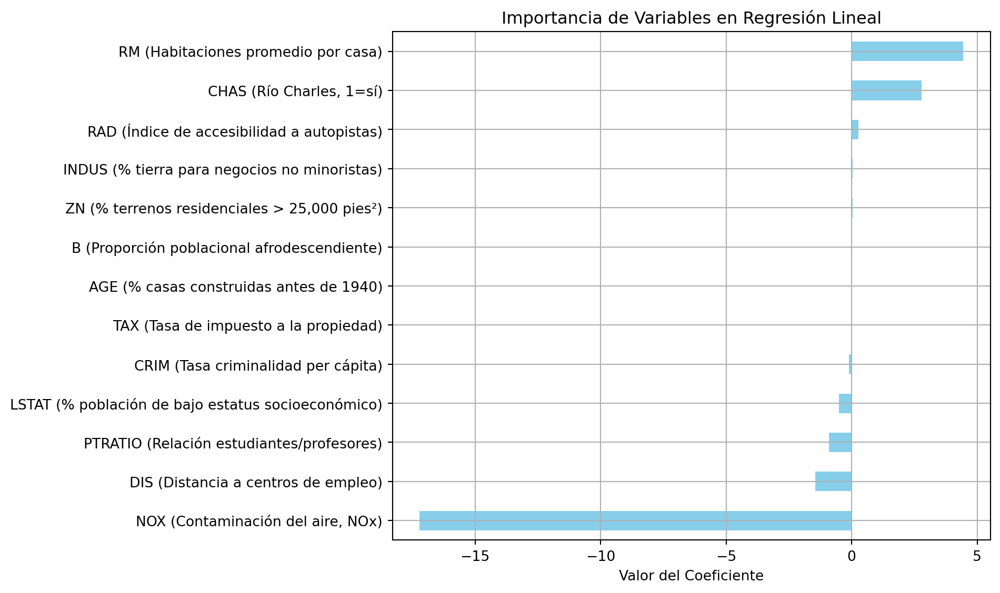
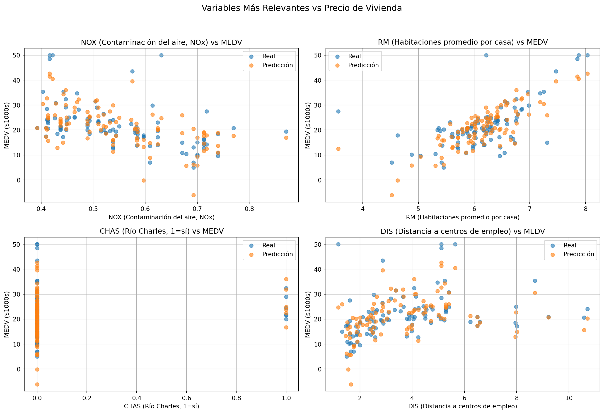

flowchart LR
A["üì• Dataset limpio (Boston.csv)"] --> B["üìä Modelo base\nRegresi√≥n Lineal"]
B --> C{"üîç ¿Problemas?"}
C -- Sobreajuste / multicolinealidad --> D["üß∞ Ridge (L2)"]
C -- Muchas variables irrelevantes --> E["üßπ Lasso (L1)"]
D & E --> F["üß™ Validaci√≥n Cruzada"]
F --> G["üìà Comparar\nR¬≤ y RMSE"]
G --> H{"üéØ ¿Buen desempe√±o?"}
H -- Sí --> I["✅ Seleccionar modelo final"]
H -- No --> J["‚öôÔ∏è Ajustar hiperparámetros\nüîÑ Repetir"]
üìä Regresi√≥n Lineal y Regularizaci√≥n con Ridge y Lasso
üîç Un análisis con el dataset üèòÔ∏è Boston Housing
ü뮂Äçüè´ Jorge Iván Romero Gelvez
üèõÔ∏è Universidad Jorge Tadeo Lozano
2025-01-01
Introducción
üí° ¿Qu√© significa la frase?
“Un buen modelo no solo ajusta bien los datos, sino que también generaliza.”

üîß Ajustar bien los datos
- üìâ El modelo aprende patrones de los datos de entrenamiento
- ✅ Tiene bajo error en el conjunto de entrenamiento
- ❗ Pero… puede memorizar incluso el ruido
- ⚠️ Riesgo de sobreajuste (overfitting)
Underfitting
Entreno al modelo con 1 sola raza de perro

- Muestra nueva: ¿Es perro?
- ❌ NO lo reconoce
- üîé La máquina falla en generalizar porque no ha visto suficientes ejemplos.
La máquina fallará en reconocer al perro por falta de suficientes muestras. No puede generalizar el conocimiento.
Overfitting
Entreno al modelo con 10 razas de perro color marrón

- Muestra nueva: ¿Es perro?
- ❌ NO lo reconoce
- ⚠️ El modelo está demasiado ajustado a los datos de entrenamiento.
La máquina fallará en reconocer un perro nuevo porque no tiene estrictamente los mismos valores de las muestras de entrenamiento.
üåç Generalizar los datos
- ü߆ El modelo funciona bien con datos nuevos
- üî¨ Puede predecir correctamente en el mundo real
- üìä Tiene buen rendimiento en el conjunto de prueba
- üéØ Es el verdadero objetivo del aprendizaje automático
üÜö Comparaci√≥n: Ajustar vs. Generalizar
| üîß Ajustar bien | üåç Generalizar bien | |
|---|---|---|
| üéØ Objetivo inicial | Minimizar error en entrenamiento | Predecir bien datos nuevos |
| ⚠️ Riesgo | Sobreajuste (memoriza) | Subajuste si es demasiado simple |
| üß∞ Herramientas | Modelos complejos | Regularizaci√≥n y validaci√≥n cruzada |
üõ†Ô∏è ¿C√≥mo logramos un buen equilibrio?
- ✅ Usando validación cruzada
- ⚖️ Aplicando Ridge y Lasso para controlar la complejidad
- üß™ Comparando resultados en entrenamiento y prueba
üéì El arte del aprendizaje automático es encontrar el punto justo entre sesgo y varianza.

üìå RETOMANDO
- üìö Modelo base: punto de partida
- üß∞ Ridge: reduce varianza, estabiliza coeficientes
- üßπ Lasso: elimina variables irrelevantes
- üîÑ Validaci√≥n cruzada: asegura buen desempe√±o fuera de muestra
- üéØ Objetivo: lograr un modelo que generalice bien
- üí° El mejor modelo no es el más complejo, sino el que predice con equilibrio y claridad.
üÜö Comparaci√≥n de T√©cnicas
| Técnica | Problema que aborda | Cómo lo resuelve | Ventajas | Limitaciones |
|---|---|---|---|---|
| Regresión Ridge | - Multicolinealidad - Sobreajuste |
Penalización L2 que reduce el tamaño de los coeficientes grandes | - Reduce varianza - Mantiene todas las variables - Buena generalización |
- No elimina variables irrelevantes |
| Regresión Lasso | - Multicolinealidad - Sobreajuste - Alta dimensionalidad |
Penalización L1 que puede reducir coeficientes a cero (selección de variables) | - Selección automática de variables - Modelos más interpretables |
- Puede eliminar variables importantes si están correlacionadas |
| Validación cruzada | - Sobreajuste - Mala generalización del modelo |
Divide los datos en subconjuntos para evaluar múltiples veces el modelo | - Estima rendimiento real - Ayuda a elegir hiperparámetros óptimos |
- Mayor costo computacional - Sensible a la forma de dividir los datos |
El dataset
1️⃣ Descripción del Dataset
El conjunto de datos Boston Housing contiene información sobre barrios de Boston, recopilada por el U.S. Census.
- Observaciones: 506
- Variables independientes: 13 características socioeconómicas y urbanas
- Variable dependiente:
MEDV(Valor medio de vivienda ocupada por sus dueños, en miles de dólares)
2️⃣ Descripción del Dataset
| Variable | Descripción |
|---|---|
| CRIM | Tasa de criminalidad per cápita por ciudad |
| ZN | Proporción de terrenos residenciales (>25,000 pies²) |
| INDUS | Proporción de tierra para negocios no minoristas |
| CHAS | Frontera con río Charles (1: sí, 0: no) |
| NOX | Concentración de óxidos nítricos (contaminación del aire) |
| RM | Número promedio de habitaciones por vivienda |
| AGE | % de unidades construidas antes de 1940 |
| DIS | Distancia a cinco centros de empleo |
| RAD | Índice de accesibilidad a autopistas radiales |
| TAX | Tasa de impuesto a la propiedad |
| PTRATIO | Relación alumno-profesor en cada barrio |
| B | Proporción poblacional afrodescendiente (cálculo especial) |
| LSTAT | % de población con bajo estatus socioeconómico |
| MEDV | Valor medio de la vivienda (en miles de dólares) |
Carga del Dataset
import pandas as pd
import numpy as np
# Cargar datos desde CMU
url = "http://lib.stat.cmu.edu/datasets/boston"
raw_df = pd.read_csv(url, sep="\s+", skiprows=22, header=None)
data = np.hstack([raw_df.values[::2, :], raw_df.values[1::2, :2]])
target = raw_df.values[1::2, 2]
columns = ['CRIM', 'ZN', 'INDUS', 'CHAS', 'NOX', 'RM',
'AGE', 'DIS', 'RAD', 'TAX', 'PTRATIO', 'B', 'LSTAT']
X = pd.DataFrame(data, columns=columns)
y = pd.Series(target, name='MEDV')
X.head()| CRIM | ZN | INDUS | CHAS | NOX | RM | AGE | DIS | RAD | TAX | PTRATIO | B | LSTAT | |
|---|---|---|---|---|---|---|---|---|---|---|---|---|---|
| 0 | 0.00632 | 18.0 | 2.31 | 0.0 | 0.538 | 6.575 | 65.2 | 4.0900 | 1.0 | 296.0 | 15.3 | 396.90 | 4.98 |
| 1 | 0.02731 | 0.0 | 7.07 | 0.0 | 0.469 | 6.421 | 78.9 | 4.9671 | 2.0 | 242.0 | 17.8 | 396.90 | 9.14 |
| 2 | 0.02729 | 0.0 | 7.07 | 0.0 | 0.469 | 7.185 | 61.1 | 4.9671 | 2.0 | 242.0 | 17.8 | 392.83 | 4.03 |
| 3 | 0.03237 | 0.0 | 2.18 | 0.0 | 0.458 | 6.998 | 45.8 | 6.0622 | 3.0 | 222.0 | 18.7 | 394.63 | 2.94 |
| 4 | 0.06905 | 0.0 | 2.18 | 0.0 | 0.458 | 7.147 | 54.2 | 6.0622 | 3.0 | 222.0 | 18.7 | 396.90 | 5.33 |
División y Modelo
from sklearn.model_selection import train_test_split
from sklearn.linear_model import LinearRegression
X_train, X_test, y_train, y_test = train_test_split(X, y, test_size=0.2, random_state=42)
model = LinearRegression()
model.fit(X_train, y_train)LinearRegression()In a Jupyter environment, please rerun this cell to show the HTML representation or trust the notebook.
On GitHub, the HTML representation is unable to render, please try loading this page with nbviewer.org.
LinearRegression()
Evaluación del Modelo
from sklearn.metrics import r2_score, mean_squared_error
y_pred_train = model.predict(X_train)
y_pred_test = model.predict(X_test)
r2_train = r2_score(y_train, y_pred_train)
r2_test = r2_score(y_test, y_pred_test)
mse_train = mean_squared_error(y_train, y_pred_train)
mse_test = mean_squared_error(y_test, y_pred_test)
r2_train, mse_train, r2_test, mse_test(0.7508856358979673,
21.641412753226312,
0.6687594935356307,
24.291119474973613)Análisis Estadístico
import statsmodels.api as sm
X_train_sm = sm.add_constant(X_train)
ols_model = sm.OLS(y_train, X_train_sm).fit()
ols_model.summary()| Dep. Variable: | MEDV | R-squared: | 0.751 |
| Model: | OLS | Adj. R-squared: | 0.743 |
| Method: | Least Squares | F-statistic: | 90.43 |
| Date: | Wed, 02 Apr 2025 | Prob (F-statistic): | 6.21e-109 |
| Time: | 17:18:46 | Log-Likelihood: | -1194.3 |
| No. Observations: | 404 | AIC: | 2417. |
| Df Residuals: | 390 | BIC: | 2473. |
| Df Model: | 13 | ||
| Covariance Type: | nonrobust |
| coef | std err | t | P>|t| | [0.025 | 0.975] | |
| const | 30.2468 | 5.677 | 5.328 | 0.000 | 19.086 | 41.408 |
| CRIM | -0.1131 | 0.035 | -3.250 | 0.001 | -0.181 | -0.045 |
| ZN | 0.0301 | 0.016 | 1.882 | 0.061 | -0.001 | 0.062 |
| INDUS | 0.0404 | 0.067 | 0.599 | 0.549 | -0.092 | 0.173 |
| CHAS | 2.7844 | 0.956 | 2.914 | 0.004 | 0.905 | 4.663 |
| NOX | -17.2026 | 4.236 | -4.061 | 0.000 | -25.531 | -8.874 |
| RM | 4.4388 | 0.464 | 9.567 | 0.000 | 3.527 | 5.351 |
| AGE | -0.0063 | 0.015 | -0.432 | 0.666 | -0.035 | 0.022 |
| DIS | -1.4479 | 0.226 | -6.408 | 0.000 | -1.892 | -1.004 |
| RAD | 0.2624 | 0.076 | 3.454 | 0.001 | 0.113 | 0.412 |
| TAX | -0.0106 | 0.004 | -2.508 | 0.013 | -0.019 | -0.002 |
| PTRATIO | -0.9155 | 0.144 | -6.357 | 0.000 | -1.199 | -0.632 |
| B | 0.0124 | 0.003 | 4.166 | 0.000 | 0.007 | 0.018 |
| LSTAT | -0.5086 | 0.056 | -9.133 | 0.000 | -0.618 | -0.399 |
| Omnibus: | 133.052 | Durbin-Watson: | 2.114 |
| Prob(Omnibus): | 0.000 | Jarque-Bera (JB): | 579.817 |
| Skew: | 1.379 | Prob(JB): | 1.24e-126 |
| Kurtosis: | 8.181 | Cond. No. | 1.49e+04 |
Notes:
[1] Standard Errors assume that the covariance matrix of the errors is correctly specified.
[2] The condition number is large, 1.49e+04. This might indicate that there are
strong multicollinearity or other numerical problems.
Diccionario de Variables
descripcion_variables = {
'CRIM': 'CRIM (Tasa criminalidad per cápita)',
'ZN': 'ZN (% terrenos residenciales > 25,000 pies²)',
'INDUS': 'INDUS (% tierra para negocios no minoristas)',
'CHAS': 'CHAS (Río Charles, 1=sí)',
'NOX': 'NOX (Contaminación del aire, NOx)',
'RM': 'RM (Habitaciones promedio por casa)',
'AGE': 'AGE (% casas construidas antes de 1940)',
'DIS': 'DIS (Distancia a centros de empleo)',
'RAD': 'RAD (Índice de accesibilidad a autopistas)',
'TAX': 'TAX (Tasa de impuesto a la propiedad)',
'PTRATIO': 'PTRATIO (Relación estudiantes/profesores)',
'B': 'B (Proporción poblacional afrodescendiente)',
'LSTAT': 'LSTAT (% población de bajo estatus socioeconómico)'
}Gráfico de Coeficientes
import matplotlib.pyplot as plt
coeficientes = pd.Series(model.coef_, index=X.columns)
coef_desc = coeficientes.rename(index=descripcion_variables)
plt.figure(figsize=(10,6))
coef_desc.sort_values().plot(kind='barh', color='skyblue')
plt.title("Importancia de Variables en Regresión Lineal")
plt.xlabel("Valor del Coeficiente")
plt.grid(True)
plt.tight_layout()
plt.show()
Gráficas de Interpretación (Top 4)
top_vars = coeficientes.abs().sort_values(ascending=False).head(4).index.tolist()
fig, axs = plt.subplots(2, 2, figsize=(14,10))
axs = axs.flatten()
for i, var in enumerate(top_vars):
axs[i].scatter(X_test[var], y_test, label='Real', alpha=0.6)
axs[i].scatter(X_test[var], y_pred_test, label='Predicción', alpha=0.6)
axs[i].set_xlabel(descripcion_variables[var])
axs[i].set_ylabel('MEDV ($1000s)')
axs[i].set_title(f"{descripcion_variables[var]} vs MEDV")
axs[i].legend()
axs[i].grid(True)
plt.suptitle("Variables Más Relevantes vs Precio de Vivienda", fontsize=14)
plt.tight_layout(rect=[0, 0.03, 1, 0.95])
plt.show()
Conclusiones
- La regresión lineal logra un buen ajuste inicial.
RMyLSTATson las variables más influyentes.- Los errores son moderados, lo cual sugiere posibilidad de mejorar con regularización.
- El modelo permite interpretar de manera clara cómo cada variable afecta el precio de la vivienda.
Siguientes Pasos
- Explorar modelos regularizados: Ridge, Lasso
- Probar transformaciones no lineales
- Usar validación cruzada para robustez
- Aplicar el modelo a nuevos conjuntos de datos